Израиль и Церковь · Библия и художник
ЕВРЕЙСКИЕ ОБРАЗЫ в творчестве католика Йозефа Регулы
Йозеф Регула – поляк, католик, своим творчеством пытается представить, вспомнить, понять тот мир, которого сам не видел, не застал.
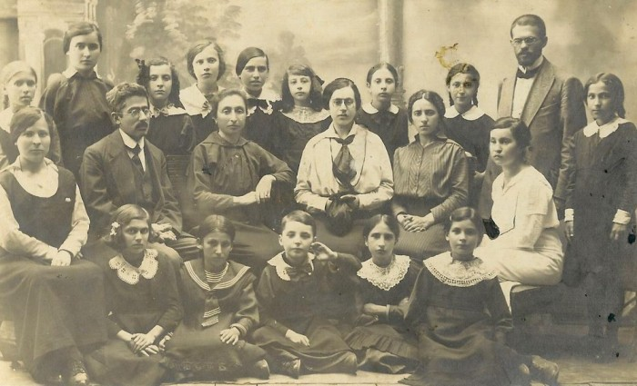
От редактора:
Мне важно было сделать этот пост в пару и в противовес предыдущему - "Еврей с монетой", чтобы показать иной взгляд на тот же предмет и совершенно иное мировосприятие. Этих "деревянных" евреев польских местечек, кроме суеверных поляков и не только, нередко приобретают американские евреи, чтобы эти фигурки были им каким то малым знаком из прошлого их родичей, некогда составлявших в Польше многочисленную, живую общину. Покупают их также и некоторые немцы. Для них это страшное напоминание того, в чем их родители принимали непосредственное участие.
Йозеф Регула – поляк, католик: своим творчеством он пытается представить, вспомнить, понять тот мир, которого он сам не видел, не застал. Он живет в еврейском районе, но там уже нет евреев. Он слышал свидетельства очевидцев, которые видели бурлящую в нем еврейскую жизнь и характерную, неповторимую идишскую культуру, некогда наполняющую этот район, которая теперь исчезла совершенно. Сгинула целая цивилизация за каких нибудь пять лет. Через свое искусство он вспоминает то, чего не знал (он родился в 1953г.). Он занимался этим не для продажи, а для себя, в попытке разобраться в чем-то важном.
Советую прочитать это вместе с "ЕВРЕЙ С МОНЕТОЙ"
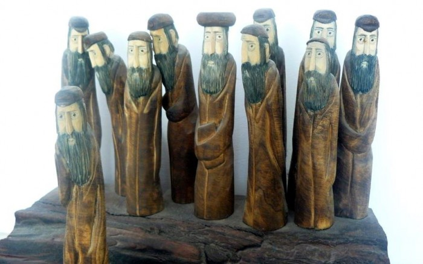
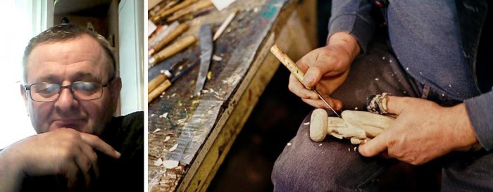
ЕВРЕЙСКИЕ ОБРАЗЫ в творчестве католика Йозефа Регулы
перевод: Веты Калиш
В творчестве его постоянно занимает несколько тем. В основном это были религиозные христианские мотивы, сюжеты из сельской жизни, тема труда, пейзажи, популярный мотив – рыбы. Одна из центральных тем его творчества – жизнь еврейского местечка.
Еврейская тема в его творчестве началась со знакомства с творчеством Исаака Зингера (В 1978 году Исаак Башевис-Зингер был удостоен Нобелевской премии по литературе «За эмоциональное искусство повествования, которое, уходя своими корнями в польско-еврейские культурные традиции, поднимает вместе с тем вечные вопросы. Йозефу очень понравились его книги.
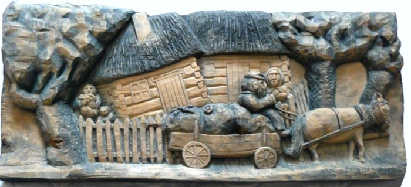
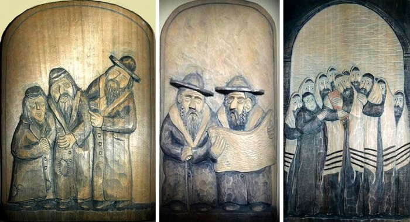
Дашевис Зингер придал его творчеству первый импульс. Он показал разнообразие и красоту этой культуры, которая завораживает. И это отношение художник старается перевести в скульптуру. «Раньше я не знал, что в хасидизме молитва осуществляется в т.ч. и посредством танца. И это удивительно. И если вы прочитаете подобного рода вещи, тогда вы это понимаете и можете интерпретировать в своем творчестве».Многие вещи к сожалению исчезают без того, чтобы оставить след, который бы запечатлелся в памяти людей. Прошло совсем немного времени и то, что происходило в Польше в течение сотен лет, просто исчезло. Оно было здесь до того, как началась война. В 1942 г. немцы схватили всех. Многие были расстреляны здесь на этом месте. Другие были загнаны в концлагеря. Двум женщинам, удалось спрятаться, но вскоре их обнаружили и расстреляли против их дома. Это известно со слов очевидца.
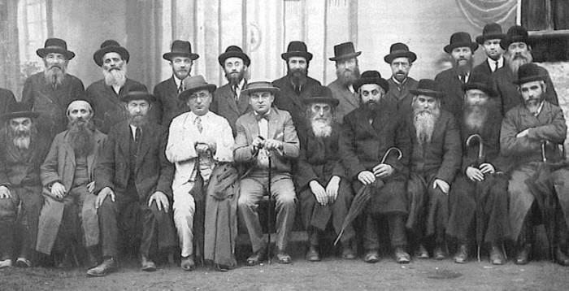
Когда-то эти евреи были в то же время и поляками. Они были неотъемлемой частью польской панорамы жизни. Художник считает атмосферу некогда цветущей еврейской жизни, близкой для себя. Он описывает еврейские характеры в их характерном окружении, подчеркивая их обычаи, богатство традиции, их мир. Для него все это необычайно интересно и является вдохновением, стимулирующим его воображение. Помимо того, что еврейская община была неотъемлемой часть Польши, его привлекал в ней также еще один момент – его библейский интерес католика. Ведь различные праздники евреев, связанные с историей Израиля и библейской историей вообще - это неотъемлимая часть Священных Писаний. Ему всегда нравилась история, особенно история Ближнего Востока. Поэтому все эти вещи очень близки Йозефу.
Он начал интересоваться, как эта культура пришла в Польшу. Все это находило отражение в его скульптурах. «Не мне судить насколько хорошо у меня это получается. Я просто это делаю и чувствую это, это то, что мне близко настолько, как если это является частью меня. Я получаю истинное удовольствие от того, что создаю нечто, что является как бы продолжение меня самого», - свидетельствует художник, - «Мое творчество – это не что-то скопированное, но рожденное мной. То, что выходит из моих рук – это плод моих размышлений и открытий».
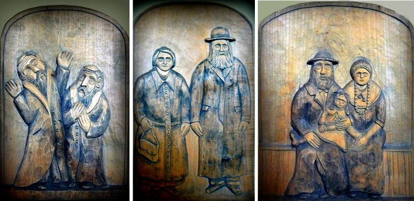
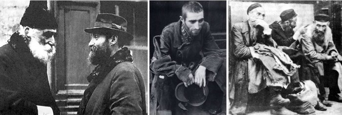
В книгах Зингера есть много женских образов, являющихся главными действующими лицами его произведений. Мужчины пребывают в синагоге, молятся, изучают Талмуд. Но большая часть других аспектов жизни принадлежит женщине: они заботятся о детях, у них тысячи различных обязанностей. Муж изучает Тору всю свою жизнь, а жена делает домашние дела, добывает хлеб насущный.Скульптор старается изобразить женщину в своих произведениях такой, чтобы она заняла свое собственное место, потому что, по его мнению, ее роль гораздо более значима в повседневной жизни, быту, чем роль мужчины. Мужчина посвящает себя священнодействию, служению Всевышнему, а женщина трудится в поте лица.
Интерес Регулы к еврейской культуре проистекает во-первых из его любопытства, во-вторых, если ты хочешь быть глубоким в том, что ты делаешь, необходимо изучать то, что питает твое творчество. «Для того, чтобы мои работы были действительно интересными, они должны быть сделаны со знанием дела, чтобы по неведению не задеть и не обидеть чувства других. Я ни в коем случае не хотел бы сделать что-то обидное для евреев, упаси меня Бог. Если вы дилетант и не сведущи в определенной сфере, то стоит ли вам вообще за это браться? Ведь вы можете ранить чьи-то чувства», говорит художник. Ему важно досконально изучить, что евреи носили, как это реально выглядело, чтобы то, что он делает не было бы искажением фактов и какими-то личными фантазиями.
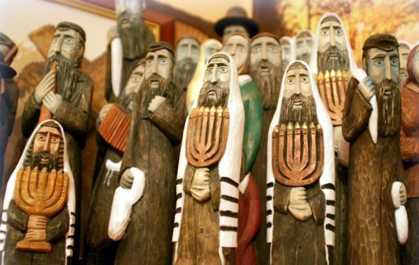
В начале Йозеф вырезал из дерева свои работы просто для себя. Они были нужны для само познания и он не думал продавать их. Но понадобились дополнительные средства для строительства нового дома. И его знакомый пан Леши из Кракова, который держал галерею, предложил ему попробовать продать их. В начале он отдал дюжину своих фигурок. Они успешно продались. С тех пор его дела пошли в гору. Наиболее популярные персонажи – скрипачи, потому что люди ассоциируют их с фильмом «Fiddler on the Roof» (Скрипач на крыше). Это уже стереотип. Так происходит с каждым хорошим фильмом.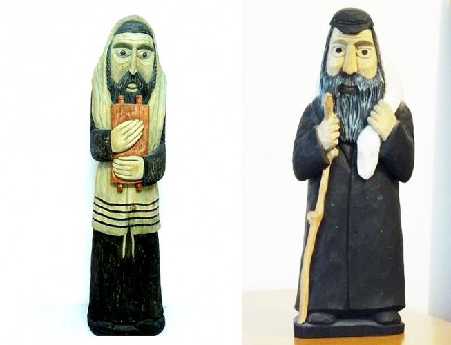
«Мне нравится изображать людей из реальной жизни. Как они общаются, разговаривают, торгуются друг с другом. Кто-то несет воду на себе. здесь целая семья. Вот бедняк - попрошайка, озабоченный, как провернуть какое-то рискованное дело. Это очень красочные, выразительные персонажи. Богатые люди не такие интересные для меня. Они просто надевают на себя какую-то маску. А вот бедные люди – особенно интересны. Они должны приложить многие усилия и позаботиться о том, чтобы добыть себе на пропитание. Это то, что вы можете видеть на моих полках».Хасидское движение зародилось в Польше. Позже распространилось на юго-восток и по Российской Империи. Многие американские евреи имеют свои семейные корни здесь. Родители Зингера также были хасидами. Их предки иммигрировали в поисках работы (уцелевшие после войны вынуждены были бежать от погромов – примечание редактора). Эти люди эмигрировали и начали новую жизнь в Америке. И теперь их потомки возвращаются сюда, чтобы узнать что-то о жизни своих предков в Польше. И поэтому они покупают эти фигурки в качестве сувениров. Каждый хочет знать о своем прошлом. Может эти фигурки отражают прошлое для них? В них есть что-то оригинальное, экзотическое. Возможно, они слышали что-то о своем прошлом, но они не представляют, какая это была жизнь. И, может эти фигурки являются для них неким напоминанием.
Иногда их покупают молодые немцы, чувствующие себя виноватыми. И некоторые из скульптур Йозефа имеют качество монументов, выражающих, что произошло не так давно и воспоминания о том еще слишком свежи. В этом причина того, что немцы их покупают.
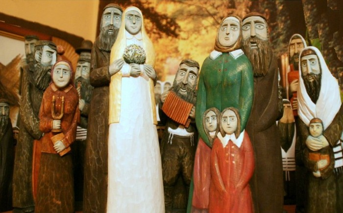
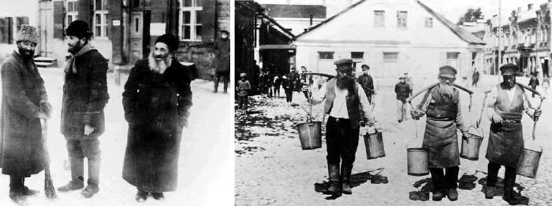
Другие люди попукают их потому, что фигурки евреев принесут им счастье. Йозеф Регла не верит в эти вещи и не согласен с такого рода суеверием. В основном это люди, имеющие польские корни, но не только."На моих полках стоят евреи и польские крестьяне и они живут по-соседству и в мире. Все они – фигурки Христа, евреи, женщины, цветы живут здесь и находятся в полной гармонии. К сожалению, реальные люди не могут жить в мире друг с другом», - с грустью замечает их автор.
Читайте также статью "ЕВРЕЙ С МОНЕТОЙ"
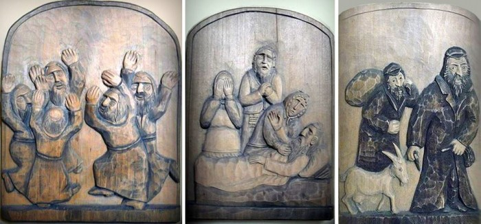
От редактора:
Вместо послесловия: Я не большой фанат такого стиля в скульптуре, но меня по-настоящему цепляет и вдохновляет творчество Йозефа Регулы от того, что оно имеет главной целью не получение удовольствия, а прежде всего духовный поиск. И когда удается в результате исследования и размышлений получить откровение - вот, что приносит истинную радость и наслаждение. На мой взгляд, это-то и есть одна из важнейших функций всякого искусства быть инструментом познания.
И Н Т Е Р В Ь Ю С Й О З Е Ф О М Р Е Г У Л О Й:
Й О З Е Ф Р Е Г У Л А В М А С Т Е Р С К О Й: